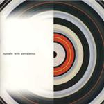

| Artist: | Tunnels |
| Title: | Tunnels With Percy Jones |
| Label: | Buckyball Records |
| Length(s): | minutes |
| Year(s) of release: | 1999 |
| Month of review: | [04/2003] |
| 1) | Inseminator | 6.09 |
| 2) | Prisoner Of The Knitting Factory Hallway | 6.40 |
| 3) | Tunnels | 6.56 |
| 4) | Maxwell's Demon | 7.17 |
| 5) | Bad American Dream Part 24 | 15.28 |
| 6) | Free Bander | 3.52 |
| 7) | Area | 7.52 |
| 8) | Barrio | 9.07 |
| 9) | Slick | 5.41 |
| 10) | Improvisation | 4.35 |
With Prisoner Of the Knitting Factory Hallway we move to a more danceable groove, plenty of eerie tones around though, making me think of Fripp on his solo albums. In between the typical jazzrock groove there are some nice melodic to be found as well making for a nice change. The groovy guitar parts are a bit too 'old' for me, too much in the American jazzrock style and too danceable. Hah, but wait when they thrown in a few dissonants on the piano, thinks become a bit more interesting again. The players by the way are impeccable (as far as I can judge, which is not far).
We are now at the more experimental Tunnels, with some vocal sound and estranged grooves with a strong focus on fast drumming, accidental guitar and a low bass riding throughout zooming and pumping. An eerie piece of music and like the opener from the hand of Percy Jones. A meandering piece, but one which I could follow well-enough to its end with especially the highly percussive marimba plus drums feel making for a very rhythmic exercise. Hard to sit still with this one. When the guitar sets in however, the jazzrock feel becomes a bit too strong and well there is not much to set it apart anymore from other jazzrock outfits. I guess I like Tunnels at their most non-jazzrock the most. Maxwell's Demon is not a great starter, but it does contain some of the more melodic parts so far, almost string orchestra (without the special need to make it sound similar to it). Anyway, the keys are important here playing some very melodic lines, the guitar is also allowed some space in the sun, but wait for the introspective sparse intermezzo.
By far the longest track on the album is the spooky Bad American Dream Part 24. Opening with some fast subtle drumming and ethereal guitar lines, this is again a potent piece with good contributions by all. The eerie keyboards and the dynamic rhythm section set this apart from standard jazzrock fair, as is for instance the case with a fusion prog band like Spaced Out. The music of Tunnels however is both less melodic and seems more complex. Time for a lengthy drum solo now, followed by what you might call a keyboard solo. Seems everybody gets his share of solo on this track, which can be seen as a showcase, because Percy also plays plenty of solo bass. Towards the end everything comes together for a blistering finale, although the end is more in Toto style again.
Free Bander is a more straightforward bouncy track, while Area is again more free form with plenty of marimba style keyboards and the music coming on in waves. Drummer Katz keeps himself busy enough and the repetitive guitar gets to be quite mean. In Barrio we have the typical jazzrock guitar, but also a low down growl of the bass. At times I am strongly reminded of Gordian Knot here, whose sound also sometimes nears jazzrock/fusion. There is some melody involved here as well. At this point exhaustion threatens to take me over, because this album is quite a long haul. A fast groove rides on the second part of Barrio, fast and precise.
The final two tracks Slick and Improvisation are live ones. The sound quality is a bit less here, and the music on Slick at least definitely more moody. More like a drawn out bass solo, very sensitive as well. Even between the opening and the conclusion things do get a bit more hectic, but overall this is a rather easy going piece. Improvisation signifies another going back in sound quality, but the music is worth it.